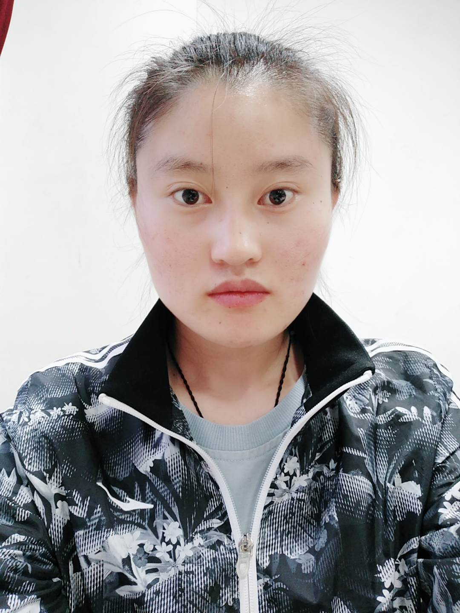

个人信息
- 姓名:
- 王肖肖
- 性别:
- 女
- 出生日期:
- 1997.07.23
- 家庭地址：
- 河北邯郸
- 联系电话：
- 15130045541
- 邮箱：
- 1113508535@qq.com
求职意向
平面设计师/网页设计师随时到岗工资面议
教育背景
2016-2019保定职业技术学院
主修课程：美术基础、设计基础、图形创意、网页设计、版式设计、企业形象设计、平面广告设计、电视广告、市场营销、广告策划、平面广告制作等。
职业技能
1.对产品比较敏感，具有超强的表现力和想象能力，乐于研究新鲜事物，充满好奇心；
2.有对色彩的把握能力、独特的设计风格、独到的创意视角；对设计趋势有较强的敏感度，具备开阔的眼界和良好的学习能力；
3.能够独立完成PC端，移动端的设计，了解用户需求，熟悉用户体验的设计流程及方法；
4.熟练运用:Photoshop，Illustrator，AI，AE，能独立完成网站的页面设计；
5.熟练掌握CSS3、H5代码规范，掌握移动响应式开发。
6.具有一定的视觉设计能力，并且能设计出符合时下视觉流行趋势的产品；
获得奖项
2017年荣获中国大学生广告艺术节广告文案：佳作奖
2017年荣获ISO证书
2018年上半年荣获中国大学生广告艺术节广告文案：佳作奖、优秀奖
2018年下半年荣获中国大学生广告艺术大赛平面广告：优秀奖
个人总结
1.我的性格比较开朗，活泼，乐于助人。
2.对工作认真负责，不推卸责任，善于总结，
3.努力勤奋，具有一定的抗压能力。
3.具有团队精神，能与同事，其他部门积极配合。
4.追求时尚，喜欢富有挑战性和有发展空间的工作。
5.能够独立完成平面的东西，在工作方面从不拖拖拉拉。
6.在工作中具备高度的责任心及执行力、良好的职业道德；诚信和工作作风、愿意接受挑战性工作，能够高效及时完成工作。
7.在工作期间能够合理安排自己的时间，规划自己的未来，有较强的学习精神和自控能力以及时间观念。